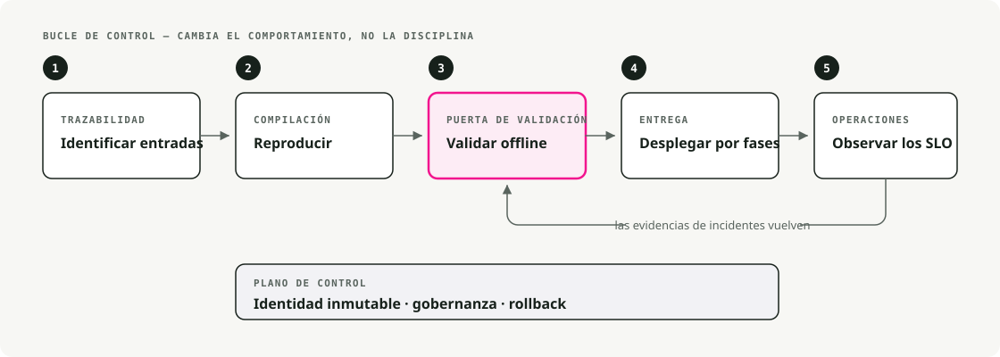
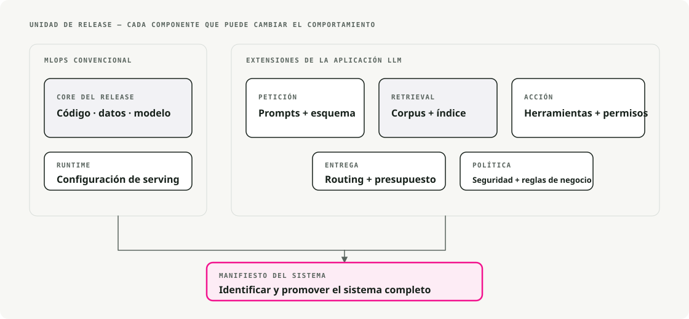
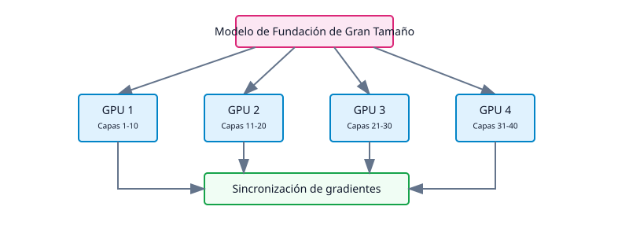
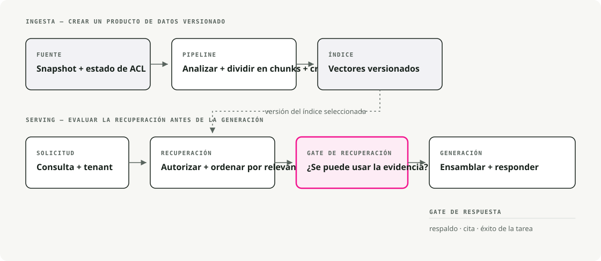
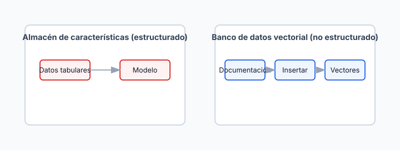
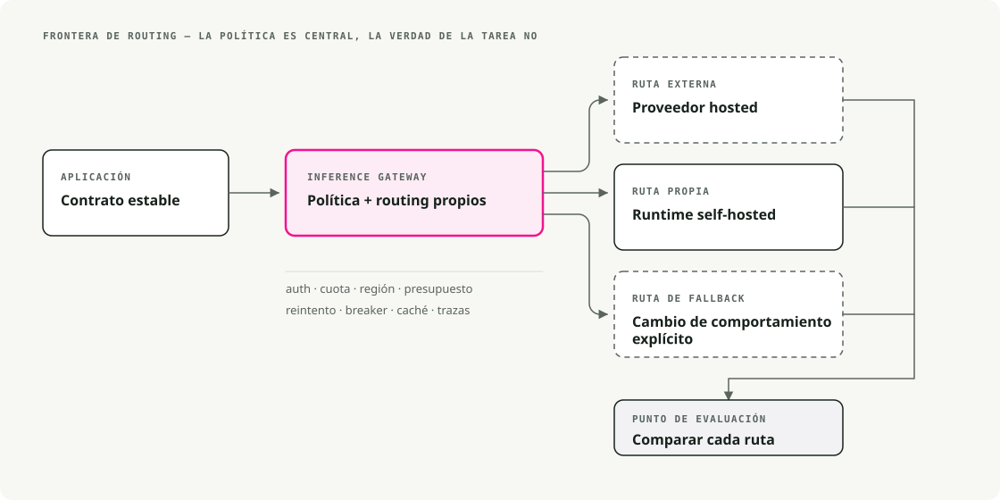
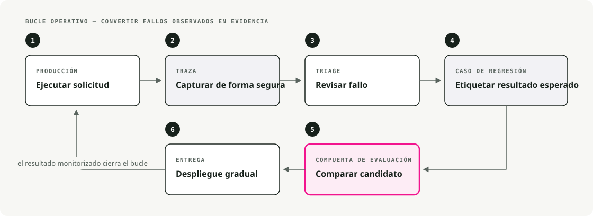

Traducción automática
Este artículo se tradujo automáticamente a partir de la versión original en inglés.
MLOps vs LLMOps: infraestructura para modelos fundacionales y sistemas con LLM
Los modelos fundacionales rompieron la mayoría de los supuestos sobre los que se construyó el MLOps clásico. Este es un recorrido por lo que cambió, lo que se mantuvo y los patrones que llenaron ese hueco.
MLOps clásico antes de los modelos fundacionales
Hace unos años, MLOps significaba sobre todo DevOps para ML: automatizar el ciclo de vida desde la preparación de datos hasta el despliegue y la monitorización. Los modelos eran lo bastante pequeños como para entrenarlos desde cero con datos del dominio, y la infraestructura lo reflejaba.

1.1. Pipelines end-to-end
Los equipos construían pipelines para extracción de datos, entrenamiento, validación y despliegue. Airflow se encargaba del ETL y de la orquestación del entrenamiento. CI/CD ejecutaba tests y enviaba modelos a producción. Los modelos se desplegaban como contenedores Docker sirviendo endpoints REST o jobs batch. El objetivo de todo esto era la reproducibilidad y la automatización.
1.2. Seguimiento de experimentos y versionado de modelos
MLflow y Weights & Biases eran el estándar para registrar ejecuciones, hiperparámetros y métricas. Los científicos de datos podían comparar experimentos y reproducir resultados de forma fiable. Los registros de modelos te daban números de versión, lo que hacía que los rollbacks fueran sencillos cuando un modelo nuevo rendía peor.
1.3. Entrenamiento continuo y CI/CD
Los pipelines estaban orientados a la integración continua de datos nuevos. Una configuración típica reentrenaba cada noche o cada semana a medida que llegaban datos, ejecutaba una batería de tests y auto-desplegaba si todo pasaba. Jenkins y GitLab CI/CD se aseguraban de que cualquier cambio en datos o código disparase el pipeline de forma fiable.
1.4. Infraestructura y serving
El serving tenía una huella relativamente pequeña: unos pocos núcleos de CPU o una sola GPU para inferencia en tiempo real. Kubernetes y Docker eran la opción por defecto para servicios de inferencia escalables. La monitorización cubría tres cosas: métricas de rendimiento (latencia, throughput, memoria), métricas del modelo (accuracy, drift) y salud del sistema (uptime, tasas de error).
1.5. Feature stores y gestión de datos
En finanzas y e-commerce, las features diseñadas importaban tanto como el modelo. Los feature stores ofrecían un lugar central para gestionarlas y mantenían consistencia entre entrenamiento y serving. Los datos estructurados y la ingeniería de features eran el centro de gravedad. Los datos no estructurados —texto, imágenes— se trataban aparte, fuera de estos stores.
Esta configuración funcionó bien hasta que los modelos empezaron a crecer mucho más.
2. El cambio de paradigma: auge de los modelos fundacionales a gran escala
Entre 2018 y 2020, el panorama cambió rápido. Los investigadores empezaron a publicar modelos fundacionales: modelos muy grandes preentrenados sobre corpus amplios que podían adaptarse a muchas tareas.
La progresión fue rápida:
- 2018–2019: BERT y GPT-2 hicieron creíble el transfer learning a escala.
- 2020–2021: GPT-3 y PaLM mostraron lo que podía hacer la escala bruta.
- 2021–2023: Modelos de imagen como DALL-E y Stable Diffusion llevaron la IA generativa al mainstream.
- 2023–2024: Los modelos fundacionales pasaron a ser infraestructura por defecto: disponibles en Hugging Face, AWS Bedrock, Vertex AI Model Garden y directamente de proveedores de API.

Esto es lo que los modelos fundacionales cambiaron realmente en la infraestructura de ML.
2.1. Lo preentrenado gana a entrenar desde cero
En lugar de entrenar desde cero, los equipos empezaron a partir de un modelo preentrenado y a hacer fine-tuning para la tarea. El tiempo de entrenamiento pasó de semanas a horas. Los requisitos de datos bajaron de millones de ejemplos a miles. Equipos más pequeños podían sacar productos de IA serios sin tener detrás una organización de investigación.
Los modelos más grandes (miles de millones de parámetros) suelen usarse tal cual vía APIs o se ajustan con adaptadores ligeros. La descripción del trabajo cambió: menos "¿cómo construyo un modelo?" y más "¿cómo uso e integro uno?".
2.2. Tamaño del modelo y exigencias computacionales
A escala LLM, el resto del stack también tiene que cambiar. Un modelo de 175B parámetros no es simplemente uno de 50M más grande: no cabe en el mismo hardware, no se entrena igual y no se sirve igual.
Los problemas:
- Training requiere hardware potente (GPUs, TPUs) y cómputo distribuido.
- Model parallelism fragmenta un único modelo entre múltiples GPUs.
- Data parallelism sincroniza muchos workers GPU durante el entrenamiento.
- Inference suele necesitar múltiples GPUs o runtimes especializados para mantener la latencia bajo control.
DeepSpeed y ZeRO (Zero Redundancy Optimizer) aparecieron específicamente para hacer viable el entrenamiento de modelos enormes. Los requisitos de infraestructura crecieron varios órdenes de magnitud.
2.3. La aparición de LLMOps
Ejecutar estos modelos en producción necesitó extensiones al MLOps clásico. De ahí salió LLMOps: MLOps especializado para modelos grandes, con los mismos principios pero una superficie de problemas distinta:
- Compute: gestionar clústeres de GPU caros, no pools de CPU.
- Prompt engineering: modelar el comportamiento mediante el diseño de entradas.
- Safety monitoring: detectar sesgos, contenido dañino y fugas de datos.
- Performance management: equilibrar latencia, calidad y coste por token.
Problemas que apenas importaban en modelos pequeños —texto sesgado, datos de entrenamiento filtrados— pasaron a ser riesgos reales a escala LLM.

El diagrama de NVIDIA muestra bien cómo se anidan estas especialidades: MLOps clásico por fuera, luego GenAI Ops (cualquier modelo generativo), después LLMOps (modelos de lenguaje grandes específicamente) y, por último, RAGOps para sistemas con recuperación aumentada. La idea de este anidamiento es que cada capa interna se apoya en las prácticas de las externas; no las sustituye.
2.4. Modelos fundacionales como servicio
El otro gran cambio: muchas aplicaciones ya no alojan sus propios modelos, sino que llaman a los de otro. OpenAI, Cohere y AI21 Labs ofrecen LLM alojados. Google Vertex AI ofrece un Model Garden de modelos preentrenados. AWS Bedrock aloja modelos fundacionales propietarios. Hugging Face aloja miles de pesos abiertos que puedes descargar o ejecutar en la nube.
Esto reorganiza la arquitectura. Los pipelines de producción llaman a APIs externas para inferencia, lo que te evita gestionar GPUs pero introduce nuevos costes:
- Latencia: los viajes de red de ida y vuelta añaden sobrecoste.
- Coste: el pricing por token hace que los picos de uso impacten directamente en la factura.
- Privacidad de datos: cualquier cosa que envías a un proveedor sale de tu perímetro.
- Vendor lock-in: el comportamiento de la API, los precios y las políticas no están bajo tu control.
Este trade-off funciona para la mayoría de equipos. Gestionar tu propio stack de serving para LLM es una inversión de ingeniería real, y no siempre compensa.
3. Nuevos requisitos y capacidades en la infraestructura moderna de ML
La infraestructura moderna de ML tiene que soportar cosas que hace unos años eran de nicho o directamente no existían. Las que más aparecen son estas:
3.1. Entrenamiento distribuido y model parallelism
Entrenar un modelo de mil millones de parámetros supera la capacidad de una sola máquina. La infraestructura moderna orquesta el entrenamiento entre muchos nodos:

Hay dos divisiones principales:
- Model parallelism: dividir las capas del modelo entre GPUs (cada GPU ejecuta una parte del forward pass).
- Data parallelism: replicar el modelo entre GPUs y dividir los datos de entrenamiento, sincronizando después los gradientes.
PyTorch Lightning y Horovod gestionan entrenamiento distribuido general. NVIDIA Megatron-LM es la referencia para transformers masivos. El stack JAX/TPU de Google cubre clústeres TPU.
Hace unos años, la mayoría de equipos entrenaban en un único servidor. Ahora las plataformas de ML lanzan jobs en clústeres GPU, gestionan fallos y agregan gradientes de decenas o cientos de workers sin que el ingeniero tenga que pensar en ello.
3.2. Técnicas eficientes de fine-tuning
Incluso hacer fine-tuning de un modelo de varios miles de millones de parámetros puede ser caro. Existen métodos eficientes en parámetros precisamente por eso:
- LoRA (Low-Rank Adaptation): entrenar un pequeño conjunto de parámetros adaptadores; los pesos base permanecen congelados. Gran reducción en cómputo y memoria.
- Prompt tuning: optimizar solo los embeddings del prompt; el modelo en sí permanece congelado.
- Adapter modules: insertar pequeñas capas entrenables entre capas congeladas.
Configurar LoRA con peft:
from peft import LoraConfig, get_peft_model
# Configure LoRA
peft_config = LoraConfig(
r=16,
lora_alpha=32,
target_modules=["q_proj", "v_proj"],
lora_dropout=0.05,
bias="none",
task_type="CAUSAL_LM"
)
# Apply to base model
model = get_peft_model(base_model, peft_config)
model.print_trainable_parameters()
La infraestructura tiene que soportar el workflow de varios pasos: descargar un modelo base desde un hub, aplicar deltas de pesos ajustados mediante fine-tuning y desplegar el conjunto combinado. Los pipelines tradicionales tuvieron que evolucionar para manejar este paso de personalización.
3.3. Prompt engineering y gestión de prompts
El nuevo artefacto en los pipelines modernos de ML es el prompt. Con los LLM, el prompt determina buena parte de lo que hace el modelo, mucho más de lo que hacían los vectores de features en el ML clásico.
Eso tiene consecuencias prácticas. Los equipos ahora mantienen bibliotecas de prompts, las versionan como código, hacen A/B testing de variantes y almacenan versiones de prompts junto a versiones de modelos en el registro. Esto es realmente distinto del ML clásico, donde las entradas eran simplemente vectores de features. Frameworks como LangChain tratan la optimización de prompts como una capacidad de primera clase.
Una evolución sencilla sería así:
v1: "Classify this text as positive or negative: {text}"
v2: "You are a sentiment analyzer. Classify: {text}"
v3: "Analyze sentiment. Return only 'positive' or 'negative': {text}"
Cada versión produce resultados distintos. Hacer seguimiento y testing de prompts acaba siendo tan importante como hacer seguimiento de los pesos del modelo.
3.4. Retrieval-Augmented Generation (RAG)
Los modelos fundacionales tienen un knowledge cutoff fijo y una ventana de contexto finita. Para mantener las respuestas actualizadas y basadas en fuentes, Retrieval-Augmented Generation (RAG) se ha convertido en práctica estándar.

En lugar de reentrenar constantemente un modelo con datos nuevos —lo cual es lento y caro—, RAG recupera documentos relevantes en tiempo de consulta y los añade al prompt como contexto.
Una cadena RAG simplificada en LangChain:
from langchain.vectorstores import Pinecone
from langchain.llms import OpenAI
from langchain.chains import RetrievalQA
# 1. Load the vector database
vector_db = Pinecone.from_existing_index("my-index", embeddings)
# 2. Initialize the LLM
llm = OpenAI(temperature=0)
# 3. Create the RAG chain
qa_chain = RetrievalQA.from_chain_type(
llm=llm,
chain_type="stuff",
retriever=vector_db.as_retriever()
)
# 4. Ask a question
response = qa_chain.run("How does LLMOps differ from MLOps?")
Las nuevas piezas de infraestructura:
- Bases de datos vectoriales (Pinecone, Weaviate, FAISS, Milvus) para búsqueda rápida por similitud sobre embeddings.
- Modelos de embeddings para convertir documentos y consultas en vectores.
- Gestión de índices para mantener los embeddings sincronizados con la fuente de verdad.
Las bases de datos vectoriales han asumido en gran medida el papel que antes tenían los feature stores tradicionales. Los datos no estructurados y la búsqueda semántica son ahora donde está la actividad, no la ingeniería manual de features.
3.5. Streaming de datos y feeds de datos en tiempo real
Las aplicaciones modernas —especialmente los asistentes impulsados por LLM— ingieren datos de forma continua: conversaciones de chat, datos de sensores, streams de eventos. Esos datos tienen que actualizar el conocimiento del modelo (vía RAG) o disparar respuestas en vivo.
El MLOps clásico estaba orientado a batch (reentrenamiento diario o semanal). El LLMOps moderno tiende a estar orientado a streams: Kafka y plataformas de event streaming, bases de datos en tiempo real (Redis, DynamoDB), feature stores online con actualizaciones continuas y pipelines de embeddings en streaming que mantienen frescos los índices vectoriales.
La línea entre ingeniería de datos y MLOps se ha difuminado. Ahora los pipelines de datos alimentan directamente la inferencia, no solo el entrenamiento.
3.6. Infraestructura de serving escalable y especializada
Servir un modelo masivo es un proyecto de ingeniería en sí mismo. Hay tres capacidades que importan más.
Serving de alto throughput y baja latencia. Las aplicaciones interactivas necesitan respuestas rápidas. Eso implica aceleración con GPU/TPU, cuantización de modelos para comprimir pesos y acelerar la inferencia, batching en GPU para servir múltiples peticiones en paralelo, y motores optimizados como TensorRT de NVIDIA, Triton Inference Server o DeepSpeed-Inference.
Escalado serverless y elástico. Plataformas como Modal se presentan como "AWS Lambda pero con soporte para GPU": tú llevas el código, ellos gestionan infraestructura y escalado. No pagas por servidores ociosos, el cómputo arranca bajo demanda, escala a cero cuando no pasa nada y crece bajo carga. La contrapartida es la latencia de cold start, la falta de estado y menos control sobre el runtime. Encaja bien con cargas irregulares donde no tiene sentido mantener caliente un clúster GPU.
Serving distribuido de modelos. Para modelos demasiado grandes para una sola GPU, la propia inferencia se distribuye. El modelo se fragmenta entre máquinas, cada una manejando parte del forward pass. Servir on-prem un modelo de 175B parámetros implica de forma realista múltiples GPUs cooperando. La infraestructura moderna tiene que lanzar réplicas de inferencia distribuida y enrutar peticiones al shard correcto.
3.7. Monitorización, observabilidad y guardrails
Los modelos grandes pueden producir salidas erróneas o inseguras de formas que los modelos pequeños no podían. La monitorización tiene ahora tres capas.
Rendimiento y fiabilidad. Lo básico sigue aplicando: latencia, throughput, memoria, utilización de GPU, coste. El autoscaling importa más porque los minutos de GPU son caros: conviene degradar a un modelo más pequeño bajo carga si el grande no compensa la cola.
Calidad de salida y seguridad. Ahora vigilas lo que dice el modelo, no solo si respondió. Filtrado de contenido para discurso de odio, PII y contenido dañino. APIs de moderación (de OpenAI o propias). Evaluación continua de sesgos. Guardrails que interceptan entradas adversarias y mantienen las salidas dentro de alcance. Nada de esto es opcional en LLMOps en producción.
Bucles de feedback. La mejora continua ahora incluye a humanos. Recoge interacciones (likes, correcciones, valoraciones), úsalas para hacer fine-tuning o ajustar prompts y, en sistemas de alto riesgo, aplica RLHF (Reinforcement Learning from Human Feedback) para codificar preferencias en el modelo. La infraestructura tiene que capturar y gestionar estos datos de feedback de forma segura.
4. Evolución de la arquitectura de sistemas y patrones de diseño
Entonces, con todos estos requisitos nuevos, ¿cómo se construyen realmente hoy los sistemas de ML? Hay unos cuantos patrones que aparecen una y otra vez.
4.1. Pipelines modulares y orquestación
Las herramientas clásicas (Kubeflow Pipelines, Apache Airflow) siguen presentes para workflows de fine-tuning, batch scoring y reentrenamiento periódico. Herramientas más recientes —Metaflow, Flyte, ZenML— ofrecen workflows pythonic que se conectan directamente con librerías de ML. Para inferencia de baja latencia, el código de aplicación suele sustituir por completo a un motor de workflows pesado.
El cambio práctico: los ingenieros ya no necesitan salir de su entorno de desarrollo para gestionar el camino desde los datos hasta el despliegue.
4.2. Hubs y registros de modelos
La gestión de modelos se movió a hubs centralizados. Hugging Face Hub aloja miles de modelos, datasets y scripts: una ventanilla única con arquitectura plug-and-play (descargar modelos al arrancar). Los registros internos como MLflow y SageMaker Model Registry gestionan modelos a medida, a menudo combinados con modelos fundacionales externos.
El cambio: en lugar de construirlo todo in-house, los ingenieros planifican cómo hacer fine-tuning y adaptar modelos de terceros. Es un modelo mental distinto y mucho más rápido.
4.3. Feature stores vs. bases de datos vectoriales
La capa de datos cambió de forma:

Los feature stores tradicionales manejaban datos estructurados con ingeniería manual de features. Las bases de datos vectoriales modernas (Pinecone, Weaviate, Chroma, Milvus) manejan embeddings de alta dimensión, búsqueda rápida por similitud, deduplicación semántica y RAG.
En sistemas reales verás ambas: una vector DB para búsqueda semántica sobre datos no estructurados y un data warehouse para analítica estructurada. No son sustitutos.
4.4. Plataformas unificadas (end-to-end)
La complejidad del ML moderno ha empujado a los equipos hacia plataformas end-to-end que abstraen la capa de infraestructura.
Las grandes plataformas cloud han apostado fuerte:
- Google Vertex AI: entrenamiento auto-distribuido sobre TPU pods, Model Garden con LLM y despliegue en un clic.
- AWS SageMaker: entrenamiento distribuido, model parallelism, más Bedrock para modelos fundacionales alojados.
- Azure ML: entrenamiento, despliegue y monitorización integrados.
Estas plataformas ofrecen servicios gestionados como "haz fine-tuning de este modelo de 20B parámetros con tus datos" o "genera embeddings e indexa tu texto para recuperación". A su lado, el ecosistema open-source y de startups completa huecos: MosaicML (ahora Databricks) para entrenamiento y despliegue eficiente de modelos grandes, Argilla y Label Studio para etiquetado de datos y creación de datasets de prompts, ClearML y MLflow para seguimiento de experimentos ligado a la ejecución de pipelines.
4.5. Inference gateways y APIs
Cuando tienes modelos de varios tamaños, necesitas una forma de enrutar peticiones de manera inteligente. Eso es un inference gateway:

Es útil para enrutar según requisitos de latencia, servir modelos distintos a diferentes niveles de suscripción, hacer A/B testing de modelos nuevos sobre una fracción del tráfico y degradar a modelos más pequeños bajo alta carga. El gateway desacopla la API orientada al cliente de la implementación del modelo, lo que hace que los cambios y experimentos sean mucho menos disruptivos.
4.6. Sistemas agentic
El patrón más reciente es el de los agentes de IA: sistemas que eligen secuencias de acciones de forma dinámica en lugar de ejecutar una cadena fija. Un agente puede llamar a herramientas externas (calculadoras, motores de búsqueda, bases de datos), decidir su workflow en tiempo de ejecución según el contexto e invocar distintos modelos para diferentes subtareas.
Frameworks como el modo agente de LangChain, el function calling de OpenAI y sistemas estilo AutoGPT hacen esto práctico. Las prácticas operativas que vienen con ello (a veces llamadas "AgentOps") no son opcionales: monitorización para detectar acciones no deseadas, logging detallado para trazar rutas de decisión y guardrails para limitar lo que el agente puede hacer.

Los sistemas agentic aún no están muy extendidos en producción, pero gran parte de la frontera actual de LLMOps está ahí.
5. Cómo empezar con LLMOps
Si todo esto es nuevo para ti, el ecosistema LLMOps puede resultar abrumador. Esta es la ruta que sugeriría:
- Juega con APIs. Empieza con OpenAI o Anthropic para hacerte una idea del prompt engineering.
- Construye una app RAG. Usa LangChain o LlamaIndex para sacar una demo de "Chat with your PDF". Tocarás bases de datos vectoriales y recuperación por el camino.
- Prueba el fine-tuning. Usa Hugging Face para hacer fine-tuning de un modelo pequeño (Llama-3-8B o Mistral-7B) sobre un dataset personalizado en Google Colab.
- Despliega. Ejecuta vLLM o Ollama primero en local y luego muévelo a un proveedor cloud.
6. Conclusión: de MLOps a LLMOps y más allá
Los fundamentos de MLOps —automatización, reproducibilidad y despliegue fiable— siguen vigentes. Lo que cambió fue la escala (miles de millones de parámetros), el enfoque (adaptar modelos fundacionales en lugar de entrenar desde cero), la capa de datos (bases de datos vectoriales compartiendo protagonismo con los feature stores) y la superficie de monitorización (seguridad del contenido, no solo latencia). LLMOps surgió de esos cambios. La siguiente ola —AgentOps y RAGOps— está haciendo lo mismo un nivel más arriba.